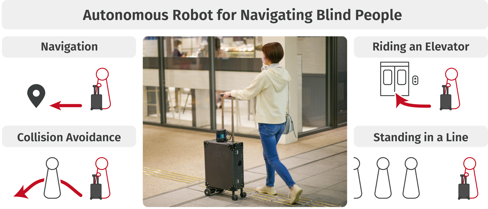

How Users, Facility Managers, and Bystanders Perceive and Accept a Navigation Robot for Visually Impaired People in Public Buildings

Abstract
Autonomous navigation robots have a considerable potential to offer a new form of mobility aid to people with visual impairments. However, to deploy such robots in public buildings, it is imperative to receive acceptance from not only robot users but also people that use the buildings and managers of those facilities. Therefore, we conducted three studies to investigate the acceptance and concerns of our prototype robot, which looks like a regular suitcase. First, an online survey revealed that people could accept the robot navigating blind users. Second, in the interviews with facility managers, they were cautious about the robot's camera and the privacy of their customers. Finally, focus group sessions with legally blind participants who experienced the robot navigation revealed that the robot may cause trouble when it collides with those who may not be aware of the user's blindness. Still, many participants liked the design of the robot which assimilated into the surroundings.
Publication
Seita Kayukawa, Daisuke Sato, Masayuki Murata, Tatsuya Ishihara, Akihiro Kosugi, Hironobu Takagi, Shigeo Morishima, and Chieko Asakawa.
2022.
How Users, Facility Managers, and Bystanders Perceive and Accept a Navigation Robot for Visually Impaired People in Public Buildings.
In Proceedings of the 31st IEEE International Conference on Robot & Human Interactive Communication (IEEE RO-MAN 2022).
Authors
Waseda University
Carnegie Mellon University
IBM Research
IBM Research
IBM Research
Waseda Research Institute for Science and Engineering
Other Links


Acknowledgements
This work was supported by JST-Mirai Program (JPMJMI19B2), JSPS KAKENHI (JP20J23018), and Consortium for Advanced Assistive Mobility Platform.
{% include footer.html %}